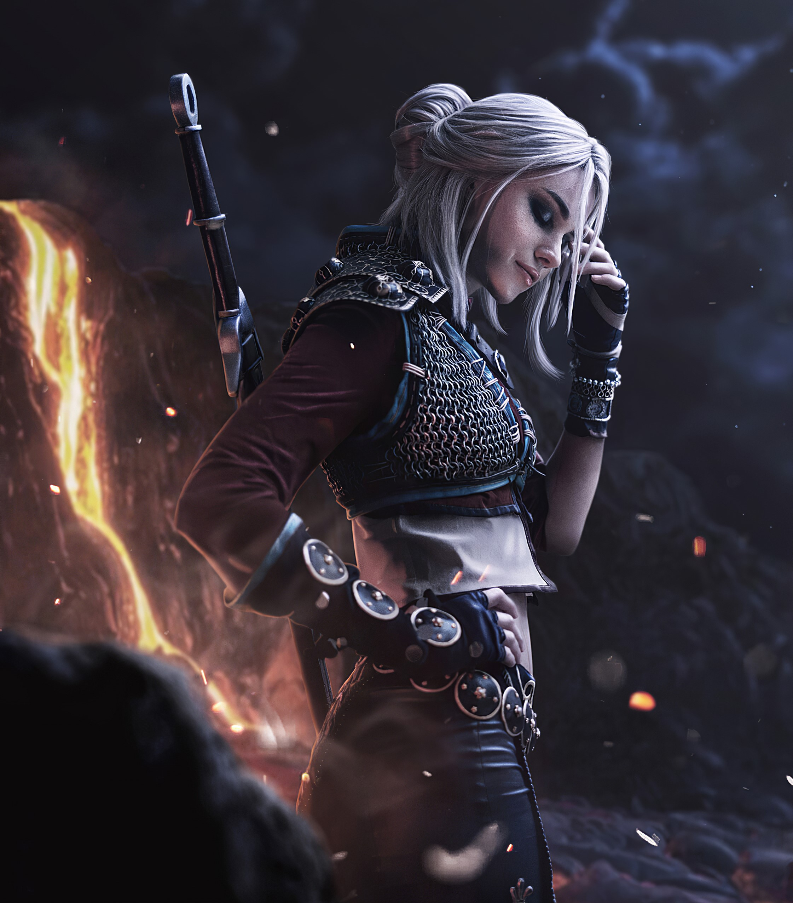
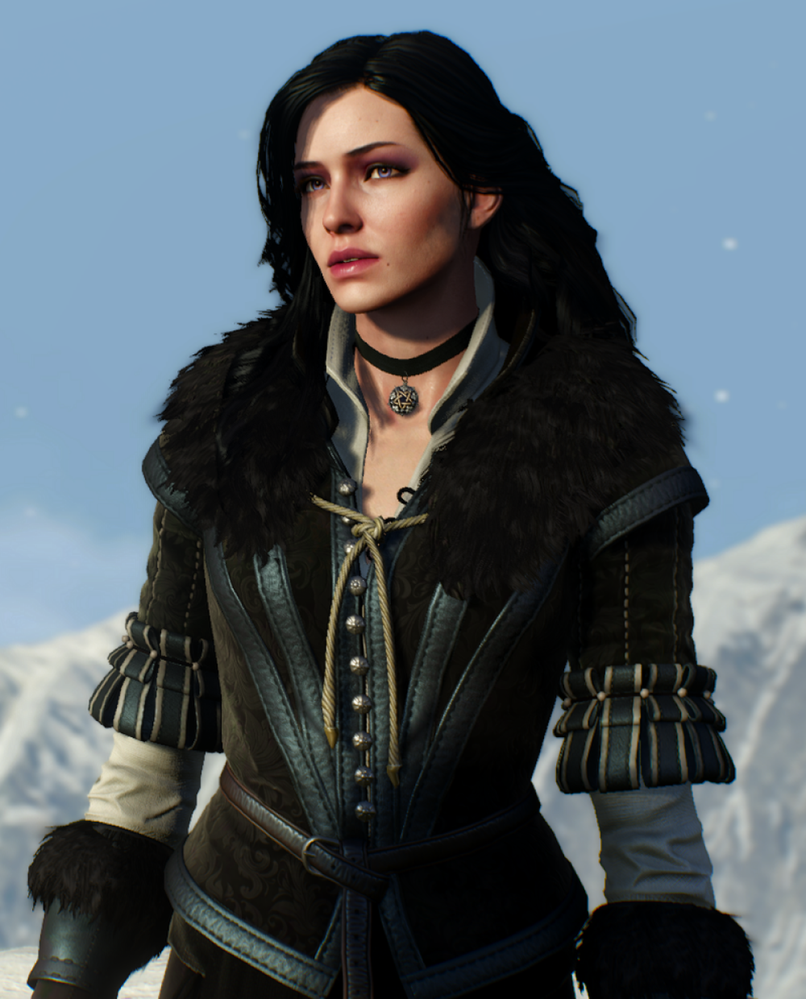
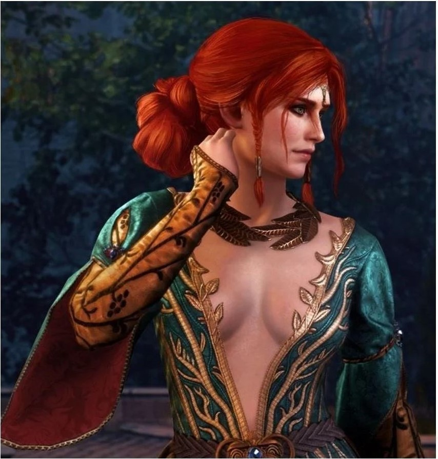

The Witcher 3
The Witcher 3 Wild hunt ist ein open world rpg. Man spielt den Character Geralt of Rivia er ist ein Hexer. Es spielt sich im 13 jahundert ab
Riva das ist die heimat der Hexer und der Ale Ellen es ist ein kleines land das nur 1 schloss hat Das ist das Hauptstadt von Riva
Novigrad & velen ist der gröste teil der map und dazu noch dort wo man am meisten unterwegs ist.
aussedem trifft man dort auf triss und yennefer und bekommt noch etwas über Ciri mit.
Skellige ist das land der Vikinger dort tifft man noch mal auf Yennefer,
sie ist die person die Geralt am meisten hilfe leistet ausserdem ist noch ein fluch auf skellige
den Geralt zusammen mit yennefer bricht.
Toussaint mit der hauptstadt Nilfgaard der ort der map mit den schönsten Aussichten.
dort kann man stunden verbringen ohne das es jemandem langweilig wird
White Orchard
The Witcher 3 Wild hunt ist ein open world rpg. Man spielt den storyyyyyyyyyyyyy$
Geralt of Rivia (aka White Wolf)
Geralt ist ein Legendärer Hexer der auf die Schule namen School of the Wolf aufgewachsen ist.
Er hat sich ausserdem in yennefer Verliebt die zwei sind dan durch einen fluch zusammen gebunden worden in eine sogenante ewige liebe.
Geralt wurde als neugeborenes kind ausgetzt doch die Wolf's Schule hat ihn dan aufgenommen und trainiert.
Er Adoptiert dan ein Mädchen namen Ciri (aka Cirilla) die er durch einen job geschenkt bekommen hat als gegenleistung für das töten von Duny.
Alle die auf der Wolf's Schule waren wurden mit mutanten blutköper inviziert und die überlebungs Chance waren sehr gering weil die blutkörper Transformatieren das herz um.
Doch bei geralt War das kein problem er hat es ohne probleme überlebt ausser das seine haare Weiss wurden im gegenzug wurde er Schneller,Stärker,hat eine grössere Ausdauer und kann den katzensinn benutzen.

Cirilla (aka Ciri)
Ciri ist die Adoptierte Tochter von Geralt sie ist das Belohnung Von dem Ehe Paar Duny und Pavetta.
Sie ist auch noch bekannt als das LöwenMädchen von Cintra denn sie ist eine Prinzessin ihre tante ist nämlich eine Königin.
Ciri hat 6 jahre lang bei zuhause Gewohnt dan ist Geralt zurück gekommen um seine belohnung abzuholen. die belohnung war Ciri.
Ciri wurde aber nicht so wie Geralt nach Riva geschickt sondern verbrachte die nächsten 6 jahre bei Yennefer die wohnte auf den Skellige Inseln.
im alter von 13 hat Geralt sie dan mit nach Riva genommen ums sie dort als hexerin antreten zu lassen und sie hat bestanden und wurde von der Wolf's Schule aufgenommen.
im alter von 16 wird sie dann Von Ale Ellen gejagt und sie flieht und Geralt versucht sie zu finden.

yennefer
Yennefer sie ist eine magierin die zuerst einmal ein Kribel war
aber mittlerweile die schönnste frau in ganz Witcher und dazu
ist sie noch Geralt seine frau. Sie wurde als kleines kind als
sklave gehaltet und ist von einer Magierin gekauft worden und erlangte so an macht und konnte sich rächen

Triss
Triss ist auch eine Magierin und auch GeralT geliebte Geralt hat mehrere und Triss kennt auch
Yennefer sie ist sogar gut mit ihr befreundet und ihr stört es auch nicht das Geralt beide Liebt.
Sie ist eine bekannte magierin die aber gesucht ist weil sie einer terror organisation angehört.
